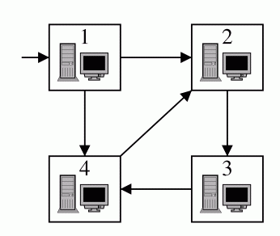

BIA机构内部使用一个包含N台计算机的网络。每台计算机被标号为1..N，并且1号机是服务器。计算机被一些单向传输线连接着，每条数据线连接两台计算机。服务器可以向任何一台计算机直接或者间接的发送数据包。
当BIA得到新的信息，数据被放在服务器上，然后通过网络分发到各台计算机。BIA的首脑在考虑如果一台计算机停止工作（例如被黑客攻击）将会发生什么，有可能一些计算机将因此得不到服务器上的数据。我们称这种计算机是critical的。
如下图，有两台critical计算机1、2。1是服务器，而所有1到3的数据都必须经过2。
